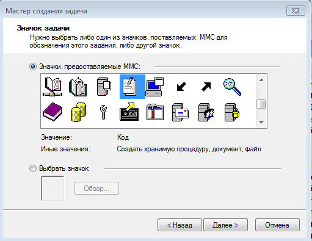
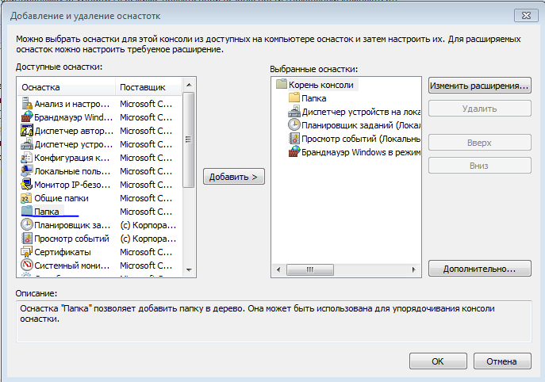
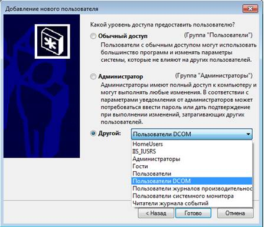
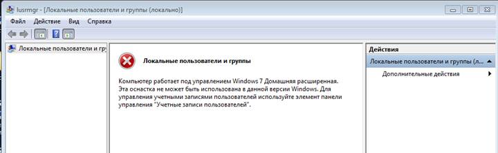
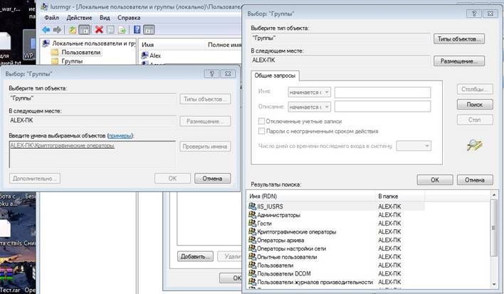

Лабораторная #3 по ОС
- Оснастки
- Добавление оснасток
- Создание ссылок
- Добавление удаленного подключения
- Добавление пользователей
- Задание
- Ссылки
Лабораторная работа №2 - Работа с пользователями, группами и средствами администрирования в Widnows.
Цель работы: Ознакомиться с некоторыми средствами администрирования в среде Widnows.Оснастки
Начнём с понятия оснасток в Windows и Консоли управления Microsoft (mmc). Консоль MMC (Microsoft Management Console) — место для хранения и отображения средств администрирования, созданных корпорацией Майкрософт и другими поставщиками программного обеспечения. Эти средства называются оснастками и служат для управления оборудованием, программным обеспечением и сетевыми компонентами Windows. Некоторые средства, расположенные в папке «Администрирование», например «Управление компьютером», являются оснастками MMC.
Значит, в чем смысл и для чего все это нужно, а например представим себе ситуацию, что в организации существует домен Active Directory и рядовые пользователи не имеют прав локального администратора на своих рабочих станциях то есть они не могу зайти в панель управления и т.д., случается ситуация, что например нужно у пользователя поменять какие либо настройки, и сделать нужно сейчас, так что искать эти настройки в групповой политике нет времени. Что делать заходить под собой не вариант, так как нужно произвести изменения в другом профиле пользователя, и как открыть например оснастку Управление компьютером или Система. Вот вам и поможет знание названия msc windows оснасток и командной строки. Все что вам нужно это открыть командную строку от имени администратора и ввести нужное название msc оснастки. Ниже представлен список. Как видите открыв командную строку cmd.exe я для примера ввел значение открывающее панель управления с правами администратора системы. Так же помимо всего прочего можно через mmc создать консоль управления, в которую можно поместить несколько оснасток для управления компьютером, чтобы они были в одном месте и запускать только один файл, тогда даже знать конкретные нижеописанные имена оснасток не нужно.
Список оснаток:
- appwiz.cpl - Установка и удаление программ
- certmgr.msc - Сертификаты
- clipbrd - Буфер обмена
- compmgmt.msc - Управление компьютером
- devmgmt.msc — Диспетчер устройств
- dxdiag - Служба диагностики DirectX
- chkdsk - Проверка дисков (обычно запускается с параметрами буква_диска: /f /x /r)
- mmc— создание своей оснастки
- control userpasswords2 - Управление учётными записями
- regedit - Редактор реестра
- services.msc - Службы
- taskmgr - Диспетчер задач
- verifier Диспетчер проверки драйверов
- И т.д.
Их список на самом деле намного больше, чем представлен тут, с полным списком можете ознакомиться сами. Так же некоторые могут отсутствовать в зависимости от версии Windows. Хранятся они в c:\windows\system32. В описании будет дана ссылка на полный их список.
Вызвать их можно либо через консоль, написав их имя, либо через меню "Выполнить".
Так же как говорилось выше можно добавить в mmc все необходимые инструменты, то есть модульная система позволяет объединить в одном месте различные оснастки, это может быть и монитор ресурсов сервера и самый обычный браузер веб-страниц. Мы с вами будем рассматривать последнюю MMC версии 3.0 поставляемую с Windows Server 2003 SP2, Windows Server 2003 R2, Windows Vista, Windows 7 и Windows Server 2008. История консолей управления началась с MMC 1.0 и Windows 95.
Консоль управления находится по пути C:\Windows\System32\mmc.exe. И вызываться может либо как на скриншоте ниже, либо через меню "Выполнить".
Запуская консоль таким образом, мы откроем её в Авторском режиме, т.е. сможем вносить изменения в структуру. У консолей MMC два режима запуска: Авторский — в котором у нас будут полная свобода действий и мы сможем удалять и добавлять оснастки; Пользовательский — запрещающий изменения в структуре и подходящий для конечного пользователя.
Пустая консоль выглядит вот так:
Теперь создадим свою первую консоль, возьмём например вот такие оснастки
- Управление компьютерами
- Управление службами;
- Локальные пользователи и группы
- Планировщик заданий
- Просмотр событий
Добавление оснасток.
Приступим к созданию собственной консоли управления. Процесс добавления оснасток в консоль интуитивно понятен: Файл — Добавить или удалить оснастку... Вот такое окно у вас откроется, там в принципе все интуитивно понятно. В этом окне осуществляется управление оснастками, их изменение и удаление и т.д.
Так же при добавлении некоторых оснасток к консоль управления у них есть настройки, оставляйте там все локально, но как вы можете заметить описываемое средство служит для администрирования и удаленного управления машинами пользователей.
То есть в итоге получиться что то типа такого. Эту консоль можно сохранить, и она может быть вызвана. Только задумайтесь о том, что данный инструмент предоставляет нам в удаленном управлении несколькими машинами, почти безграничные возможности.
Вот в таком виде они сохраняться. Так же вы можете это сделать для себя, то есть вынести в отдельное место оснастки, которыми чаще всего пользуйтесь, чтобы каждый раз не искать их. Так же если вы откроете, какие-то оснастки и закроете консоль, и заново запустите этот файл у вас все останется так же как вы и открывали последний раз.
И теперь при запуске у нас получиться, что-то вроде этого. В зависимости от того, что вы туда добавили.
Через меню вид можно настроить себе выдачу информации и общий вид окна. Подстройте под себя, поиграйтесь с чекбоксами. Отразите в отчете.
Добавление своих действий на панель управление
На панели оснасток можно увидеть набор стандартных действий, у некоторых оснасток эта панель есть, у некоторых нету. На эту панель мы самостоятельно можем добавить свои действия, которые могут нам пригодиться.
Для этого делаем сначала клик по оснастке в корне консоли и проваливаемся в меню Действия — Новый вид панели задач... И там далее по пунктам настраиваете. Открывается мастер добавления.
Первые два окна мастера оставляете без изменений, на этом этапе измените пункт на "к выбранному элементы дерева".

Добавьте имя. Далее на завершающем этапе предлагается после нажатия на кнопку "Готово" добавить очередную задачу в только что созданную панель задач. Там будет галочка отметьте её, после этого нажмите на кнопку "Готово", и там далее откроется уже непосредственно ещё один мастер добавления уже конкретно самой задачи.
Выберите пункт команда меню, мы же добавляем новую команду в ранее созданное меню.
Источником команд выберите "Элемент на панели результатов" и собственно саму задачу например "перезапустить".
Теперь указываем непосредственно имя и описание команды.
И добавляем непосредственно уже саму иконку на задачу
Вот так выглядит добавленная задачам, можете нажать и попробовать.
В моем случае она непосредственно останавливает сервис. Добавить такие панели задач можно для любой оснастки.
Добавление пункта для запуска скриптов.
Следующим шагом вы добавите в консоль пукнт из которого сможете запускать ваши рабочие скрипты и сценарии. Так же в меню - файл - добавить или удалить оснастку... И добавляем оснастку "Папка", вот как на скриншоте. Как добавите её можно будет переименовать, например в "Сценарии".
После создания этой папки, вы создаёте новую панель задач - Действие - Новый вид панели задач... Откроется мастер добавления.
Стиль панели, для удобства выбираем без списка и применяем к выбранному элементу списка
Заканчиваем создание выбором названия и добавлением описания. Ставим там галочку и запускается следующий мастер создания задач и на этот раз вы выбираете "Команда ОС"
Для запуска, например, PowerShell сценария, в поле Команда пишем powershell, а в поле Параметры — путь до сценария. В нашем случае, мы указываем путь до сценария C:\Users\Александр\Desktop\папки.bat.
Добавляем название и описание, выбираем иконку задачи и завершаем создание.
Можем добавить иконку к скрипту, чтобы было проще узнать.
Вот так выглядит добавленный скрипт. Изменить его можно из верхнего меню -> Действие - Правка вида панели задач. Таким образом можно добавлять любые сценарии и скрипты, которые вам могут пригодиться. Вот вам ещё одно доказательства того, что скрипты штука полезная для системного администратора.
Создание ссылок
Теперь приступим к созданию ссылок на сетевые ресурсы. Это может быть как папки, которые находятся локально на компьютере или сети, так и ссылки на веб-страницы. Так как мы хотим, чтобы все ресурсы были упорядочены, добавляем новую оснастку Папка и чтобы в неё можно было вкладывать другие оснастки, нажимаем на кнопку Дополнительно и ставим чекбокс Разрешить изменять родительскую оснастку и добавляем папку.
Затем опять меню Файл -> Добавить или удалить оснастку и добавляем уже ссылку на веб ресурс, только в выпадающем списке Родительская оснастка выбираем Папка и добавляем ещё одну оснастку — Ссылка на веб-ресурс:
Вам будет предложенно добавить ссылку на ресурс, я выбрал ссылку на google.
Почти закончили добавление.
И вот так это будет выглядеть в общем итоге.
Добавление удаленного подключения
Конкретно этот пункт можно не выполнять, он служит для ознакомления с возможностяи данного инструмента.
Напоследок, мы добавим в нашу консоль оснастку Удалённые рабочие столы.
После добавление оснастки, делаем по ней клик правой кнопкой мыши и выбираем пункт Добавление нового подключения....
Вводим имя компьютера или ip-адрес и имя для подключения.
При выборе нашего терминала, мы подключимся к нему из окна консоли.
В начале мы говорили о том, что некоторые оснастки работают либо с текущим локальным компьютером, либо с другим, удалённым. Возьмём, к примеру, оснастку Управление компьютером. Делаем клик правой кнопкой мыши по оснастке — Подключиться к другому компьютеру....
Вводим имя другого компьютера, нажимаем ОК.
Если компьютер существует, мы получаем консоль управление другим компьютером.
Так же если мы хотим изменить параметры запуска этой консоли на другом компьютере, например, мы не хотим, чтобы конечный пользователь мог вносить какие-либо изменения. Для этого, изменим режим запуска по умолчанию. Выбираем Файл — Параметры...
Выбираем, например Пользовательский — полный доступ. Нажимаем Применить и ОК. Данный режим позволит работать с имеющимися оснастками и не позволит добавить или удалить новые
На этом мы закончим создание консоли управления.
Создание пользователей в Windows.
Создание учетных записей пользователей для компьютеров, состоящих в рабочей группе В операционной системе Windows для компьютеров, которые состоят в рабочей или домашней группе, учетные записи можно создавать следующими способами:
Создание учетной записи при помощи диалога «Управление учетными записями пользователей»
Для того чтобы создать учетную запись при помощи диалога «Учетные записи пользователей», нужно сделать следующее:
Нажмите на кнопку «Пуск» для открытия меню, откройте «Панель управления» и из списка компонентов панели управления выберите «Учетные записи пользователей»;
В диалоге «Учетные записи пользователей» перейдите по ссылке «Управление другой учетной записью», а затем нажмите на «Создание учетной записью, перед вами будет вот такое окно»
Далее нужно будет ввести имя для учетной записи, выбрать тип учетной записи и нажать на кнопку «Создание учетной записи»
Собственно и все. Это был первый вариант, но он налагает серьёзные ограничения при создании учетных записей.
Создание учетной записи при помощи диалога «Учетные записи пользователей»
Воспользоваться комбинацией клавиш WIn+R для открытия диалога «Выполнить»; В диалоговом окне «Выполнить», в поле «Открыть» введите control userpasswords2 и нажмите на кнопку «ОК»
Чтобы открыть, мастер добавления требуется нажать на кнопку «Добавить». В появившемся диалоговом окне «Добавление нового пользователя» введите имя пользователя. Поля «Полное имя» и «Описание» не являются обязательными, то есть их можно заполнять при желании. Нажимаем на кнопку «Далее»; Далее будет окно по добавлению пароля, которое можно пропустить.
Это последний диалог мастера добавления нового пользователя. Здесь необходимо установить переключатель, определяющий группу безопасности, к которой должна относиться данная учетная запись пользователя. Можно выбрать одну из следующих групп: Обычный доступ, Администратор или Другой. Последний переключатель стоит использовать в том случае, если нужно отнести пользователя к какой-то другой группе, созданной по умолчанию в операционной системе Windows 7.
В следующем списке перечислены 15 встроенных групп операционной системы Windows 7. Скорее всего, они могут отличаться в зависимости от версии вашей ОС. Эти права назначаются в рамках локальных политик безопасности:
- Administrators (Администраторы). Пользователи, входящие в эту группу, имеют полный доступ на управление компьютером и могут при необходимости назначать пользователям права пользователей и разрешения на управление доступом. По умолчанию членом этой группы является учетная запись администратора. Если компьютер подключен к домену, группа «Администраторы домена» автоматически добавляется в группу «Администраторы». Эта группа имеет полный доступ к управлению компьютером, поэтому необходимо проявлять осторожность при добавлении пользователей в данную группу;
- Backup Operators (Операторы архива). Пользователи, входящие в эту группу, могут архивировать и восстанавливать файлы на компьютере независимо от любых разрешений, которыми защищены эти файлы. Это обусловлено тем, что право выполнения архивации получает приоритет над всеми разрешениями. Члены этой группы не могут изменять параметры безопасности.
- Cryptographic Operators (Операторы криптографии). Членам этой группы разрешено выполнение операций криптографии.
- Debugger Users (Группа удаленных помощников). Члены этой группы могут предлагать удаленную помощь пользователям данного компьютера.
- Distributed COM Users (Пользователи DCOM). Членам этой группы разрешено запускать, активировать и использовать объекты DCOM на компьютере.
- Event Log Readers (Читатели журнала событий). Членам этой группы разрешается запускать журнал событий Windows.
- Guests (Гости. Пользователи, входящие в эту группу, получают временный профиль, который создается при входе пользователя в систему и удаляется при выходе из нее. Учетная запись «Гость» (отключенная по умолчанию) также является членом данной встроенной группы.
- IIS_IUSRS. Это встроенная группа, используемая службами IIS.
- Network Configuration Operators (Операторы настройки сети). Пользователи, входящие в эту группу, могут изменять параметры TCP/IP, а также обновлять и освобождать адреса TCP/IP. Эта группа не имеет членов по умолчанию.
- Performance Log Users (Пользователи журналов производительности). Пользователи, входящие в эту группу, могут управлять счетчиками производительности, журналами и оповещениями на локальном или удаленном компьютере, не являясь при этом членами группы «Администраторы».
- Performance Monitor Users (Пользователи системного монитора). Пользователи, входящие в эту группу, могут наблюдать за счетчиками производительности на локальном или удаленном компьютере, не являясь при этом участниками групп «Администраторы» или «Пользователи журналов производительности».
- Power Users (Опытные пользователи). По умолчанию, члены этой группы имеют те же права пользователя и разрешения, что и учетные записи обычных пользователей. В предыдущих версиях операционной системы Windows эта группа была создана для того, чтобы назначать пользователям особые административные права и разрешения для выполнения распространенных системных задач. В этой версии операционной системы Windows учетные записи обычных пользователей предусматривают возможность выполнения большинства типовых задач настройки, таких как смена часовых поясов. Для старых приложений, требующих тех же прав опытных пользователей, которые имелись в предыдущих версиях операционной системы Windows, администраторы могут применять шаблон безопасности, который позволяет группе «Опытные пользователи» присваивать эти права и разрешения, как это было в предыдущих версиях операционной системы Windows.
- Remote Desktop Users (Пользователи удаленного рабочего стола). Пользователи, входящие в эту группу, имеют право удаленного входа на компьютер.
- Replicator (Репликатор). Эта группа поддерживает функции репликации. Единственный член этой группы должен иметь учетную запись пользователя домена, которая используется для входа в систему службы репликации контроллера домена. Не добавляйте в эту группу учетные записи реальных пользователей.
- Users (Пользователи). Пользователи, входящие в эту группу, могут выполнять типовые задачи, такие как запуск приложений, использование локальных и сетевых принтеров и блокировку компьютера. Члены этой группы не могут предоставлять общий доступ к папкам или создавать локальные принтеры. По умолчанию членами этой группы являются группы «Пользователи домена», «Проверенные пользователи» и «Интерактивные». Таким образом, любая учетная запись пользователя, созданная в домене, становится членом этой группы.
Так же существует и третий способ по создание учетных записей
Создание учетной записи при помощи оснастки «Локальные пользователи и группы»
Оснастка «Локальные пользователи и группы» расположена в компоненте «Управление компьютером», представляющем собой набор средств администрирования, с помощью которых можно управлять одним компьютером, локальным или удаленным. Оснастка «Локальные пользователи и группы» служит для защиты и управления учетными записями пользователей и групп, размещенных локально на компьютере. Можно назначать разрешения и права для учетной записи локального пользователя или группы на определенном компьютере (и только на этом компьютере).
Использование оснастки «Локальные пользователи и группы» позволяет ограничить возможные действия пользователей и групп путем назначения им прав и разрешений. Право дает возможность пользователю выполнять на компьютере определенные действия, такие как архивирование файлов и папок или завершение работы компьютера. Разрешение представляет собой правило, связанное с объектом (обычно с файлом, папкой или принтером), которое определяет, каким пользователям, и какой доступ к объекту разрешен.
Для того чтобы создать локальную учетную запись пользователя при помощи оснастки «Локальные пользователи и группы», нужно сделать следующее:
- Откройте оснастку «Локальные пользователи и группы» одним из следующих способов:
- Нажмите на кнопку «Пуск» для открытия меню, откройте «Панель управления» и из списка компонентов панели управления выберите «Администрирование», затем откройте компонент «Управление компьютером». В «Управлении компьютером» откройте «Локальные пользователи и группы»;
- Открыть «Консоль управления MMC». Для этого нажмите на кнопку «Пуск», в поле поиска введите mmc, а затем нажмите на кнопку «Enter». Откроется пустая консоль MMC. В меню «Консоль» выберите команду «Добавить или удалить оснастку» или воспользуйтесь комбинацией клавиш Ctrl+M. В диалоге «Добавление и удаление оснасток» выберите оснастку «Локальные пользователи и группы» и нажмите на кнопку «Добавить». Затем нажмите на кнопку «Готово», а после этого - кнопку «ОК». В дереве консоли откройте узел «Локальные пользователи и группы (локально)»;
- Воспользоваться комбинацией клавиш WIN+R для открытия диалога «Выполнить». В диалоговом окне «Выполнить», в поле «Открыть» введите lusrmgr.msc и нажмите на кнопку «ОК»;
Так же будьте внимательны, данная оснастка присутствует не во всех версиях винды.
Но если у вас нет такой ошибки, можете продолжать Откройте узел «Пользователи» и либо в меню «Действие», либо из контекстного меню выбрать команду «Новый пользователь»;
В диалоговом окне «Новый пользователь» введите соответствующие сведения. Помимо указанных данных, можно воспользоваться следующими флажками: Требовать смену пароля при следующем входе в систему, Запретить смену пароля пользователем, Срок действия пароля не ограничен, Отключить учетную запись и нажать на кнопку «Создать», а затем «Закрыть».
Для того чтобы добавить пользователя в группу, дважды щелкните имя пользователя для получения доступа к странице свойств пользователя. На вкладке «Членство в группах» нажмите на кнопку «Добавить».
В диалоге «Выбор группы» можно выбрать группу для пользователя следующим способом:
Нажать на кнопку «Дополнительно», а затем нажать на «Поиск», и потом добавить нужную группу к пользователю.
Вот и все, группа была добавлена к пользователю. Теперь пользователь состоит в группе Криптографические операторы, со всеми вытекающими правами.
Создание учетной записи при помощи командной строки
Помимо вышеперечисленных способов, учетные записи пользователей можно создавать, изменять и удалять при помощи командной строки. Для этого нужно выполнить следующие действия:
- Запустите командную строку от имени администратора;
- Для создания учетной записи при помощи командной строки используйте команду net user.
Команда net user используется для добавления пользователей, установки паролей, отключения учетных записей, установки параметров и удаления учетных записей. При выполнении команды без параметров командной строки отображается список учетных записей пользователей, присутствующих на компьютере. Информация об учетных записях пользователей хранится в базе данных учетных записей пользователей.
Например:
net user User /add /passwordreq:yes /times:monday-friday,9am-6pm/fullname:"New user"
Учтите, что некоторые параметры можно убрать. Используемые параметры:
- /add – этот параметр указывает, что необходимо создать новую учетную запись;
- /passwordreq – этот параметр отвечает за то, чтобы при первом входе в систему пользователь сменил свой пароль;
- /times – этот параметр определяет, сколько раз пользователю разрешено входить в систему. Здесь можно указывать как единичные дни, так и целые диапазоны (например Sa или M-F). Для указания времени допускается как 24-часовый формат, так и 12-часовый формат;
- /fullname – этот параметр идентичен полю «Полное имя» при создании пользователя предыдущими способами.
Задание
- Проделать вышеописанные пункты связанные с MMC.
- Проделать пункты связанные с созданием пользователей, т.е. создать пользователя несколькими вышеописанными способами.
- Отразить все действия в отчёте.